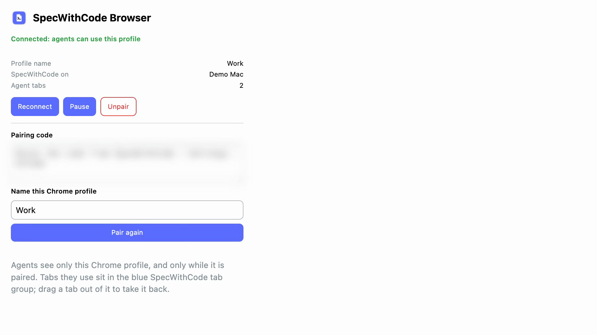

Chrome → SpecWithCode icon → paste, name Work, Pair
Settings lists the Work profile
New chat → model → GitHub Copilot
Ask it to use your Chrome
Each Chrome step shows in the chat
Copilot's tab in your Chrome
Copilot reads back the page
New chat → Codex → the same ask
Codex works in a tab of its own (wait cut)
Codex reads back the page

SpecWithCode icon → Pause
Sped up 2×
Sped up 4×
Sped up 3×
Still frame
SpecWithCode
One Chrome extension for every agent
A real run of SpecWithCode with GitHub Copilot and Codex.
SpecWithCode
Next: get SpecWithCode Browser from the Chrome Web Store (link below)
Recorded headlessly in one take on a private SpecWithCode server built from main, with SpecWithCode Browser 1.0.1 from the Chrome Web Store. The popup is shown as a zoomed tab. Off camera: the welcome wizard and adding greet-app. Waits are sped up or cut where marked. AI narration.
One Chrome extension, for every agent you run in SpecWithCode.
Open Settings, Chrome.
Add to Chrome opens SpecWithCode Browser in the Chrome Web Store, and Chrome keeps it up to date.
Choose Show pairing code, and copy it.
In Chrome, click the SpecWithCode icon, paste the code, name this profile Work, and pair it.
Start a chat with GitHub Copilot, and ask it to check the demo page in your Chrome.
It opens a tab, types Ada, presses Greet, and reads back Hello, Ada.
In another chat, Codex uses the same extension, in tabs of its own.
You install it once, for every provider.
Agent tabs stay in the blue SpecWithCode tab group. Drag a tab out to take it back.
Or press Pause, and no agent can use this profile.
Get SpecWithCode Browser from the Chrome Web Store. The link is below.